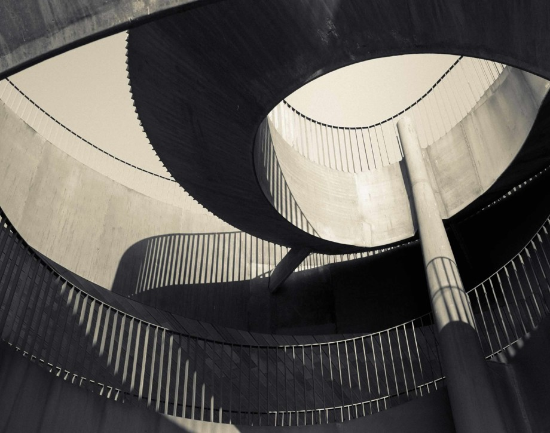

Marchesi Antinori全站标杆 · 值得专程
Antinori nel Chianti Classico
Archea Associati · 酒庄几乎消失在山体里
屋顶重新种葡萄、立面只剩两道水平切口，内部用陶土拱顶和一条巨大螺旋楼梯串起重力酿造。即使不懂酒，也有完整的空间回报。
首选Tinaia 1.5h · €50
怎么放Florence→Val d’Orcia转场
判断： 这是“建筑＋酒”最强的选择，不是因为网红。选它后，不需要连续再排两家酒庄。